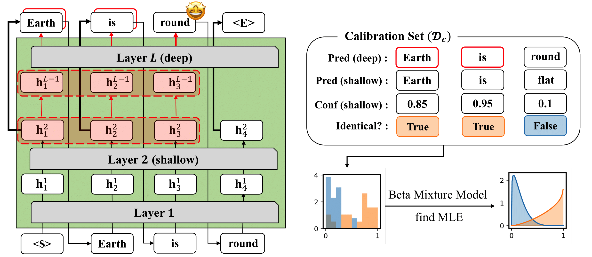
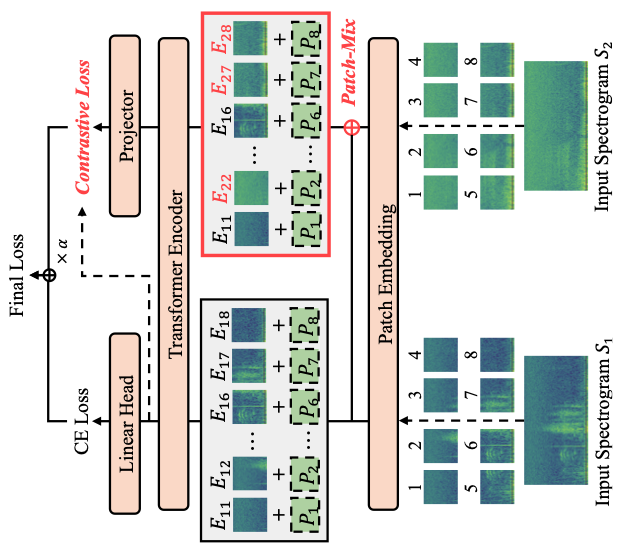
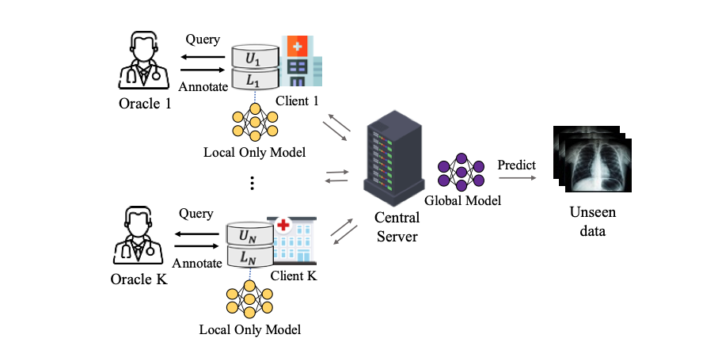

|
Sangmin Bae
Graduate School of AI, KAIST Email: bsmn0223xkxkxk@kaist.ac.kr / bsmn0223xkxkxk@gmail.com Google Scholar, CV, Github, Linkedin, X |
My research interests lie in Efficient AI, which entails exploring inference-, training- or data-efficient approaches. I'm lately interested in LLM Inference Acceleration via Adaptive Computation algorithms or various techniques. Moreover, I have experienced in developing Foundation Models---pretraining LLMs optimized for accelerated inference, and self-supervised learning for visual models.
News
May 2025:  Starting an internship at Meta FAIR.
Starting an internship at Meta FAIR.
May 2025: 🎊 A paper on 'Audio-Visual Speech Recognition with MoE' accepted at ICML 2025.
Jan. 2025: 🎊 Three papers on 'Recursive Transformer, Audio-Visual Speech Recognition, Data Selection for Diffusion' accepted at ICLR 2025.
Sep. 2024: 🎊 A paper on 'Global-to-Local Language Modeling for Fast Inference' accepted at NeurIPS 2024.
May 2024:  Starting an internship at Google DeepMind.
Starting an internship at Google DeepMind.
Education
Publications Google Scholar *: 1st co-authors, †: corresponding authors, C: conferences, J: journals, W: workshops, P: preprints

|
[P4] As a first-author. Dynamic Adaptive Computation. Under Review 2025. |
|
|
[P4] As a co-author. Training-free Guidance for Diffusion. Under Review 2025. |
| [C16] Sungnyun Kim, Kangwook Jang, Sangmin Bae, Sungwoo Cho, Se-Young Yun†. MoHAVE: Mixture of Hierarchical Audio-Visual Experts for Robust Speech Recognition. International Conference on Machine Learning (ICML) 2025. [pdf] | |
| [C15] Sangmin Bae, Adam Fisch, Hrayr Harutyunyan, Ziwei Ji, Seungyeon Kim, Tal Schuster†. Relaxed Recursive Transformers: Effective Parameter Sharing with Layer-wise LoRA. International Conference on Learning Representations (ICLR) 2025. [pdf] | |
| [C14] Sungnyun Kim, Sungwoo Cho, Sangmin Bae, Kangwook Jang, Se-Young Yun†. Multi-Task Corrupted Prediction for Learning Robust Audio-Visual Speech Representation. International Conference on Learning Representations (ICLR) 2025. [pdf] [code] | |
| [C13] Yongjin Yang*, Sihyeon Kim*, Hojung Jung, Sangmin Bae, SangMook Kim, Se-Young Yun†, Kimin Lee†. Automated Filtering of Human Feedback Data for Aligning Text-to-Image Diffusion Models. International Conference on Learning Representations (ICLR) 2025. [pdf] |

|
[P2] Felix den Greejen*, Sangmin Bae, Stephen Cha, Se-Young Yun†. Fine-tuned In-Context Learning Transformers are Excellent Tabular Data Classifiers. Preprint (Under Review) 2024. [pdf] [code] |
| [C12] Namgyu Ho*, Sangmin Bae*, Taehyeon Kim, Hyunjik Jo, Yireun Kim, Tal Schuster, Adam Fisch, James Thorne†, Se-Young Yun†. Block Transformer: Global-to-Local Language Modeling for Fast Inference. Conference on Neural Information Processing Systems (NeurIPS) 2024. [pdf] [code] | |
| [W7] Sihyeon Kim*, Boryeong Cho*, Sangmin Bae, Sumyeong Ahn†, Se-Young Yun†. VACoDe: Visual Augmented Contrastive Decoding. International Conference on Machine Learning Workshop on Trustworthy Multi-modal Foundation Models and AI Agents (ICMLW) Under Review 2024. [pdf] | |
| [C11] Sungnyun Kim*, Kangwook Jang*, Sangmin Bae, Hoirin Kim†, Se-Young Yun†. Learning Video Temporal Dynamics with Asymmetric Cross-Modal Attention for Robust Audio-Visual Speech Recognition. IEEE Spoken Language Technology Workshop (SLT) 2024. [pdf] | |

|
[C10] Yunseon Choi, Sangmin Bae, Seonghyun Ban, Minchan Jeong, Chuheng Zhang, Lei Song, Li Zhao, Jiang Bian, Kee-Eung Kim†. Hard Prompts Made Interpretable: Sparse Entropy Regularization for Prompt Tuning with RL. The Association for Computational Linguistics (ACL) 2024. Oral Presentation. [pdf] [code] |

|
[C9] June-Woo Kim, Miika Toikkanen, Sangmin Bae, Minseok Kim†, Ho-Young Jung†. RepAugment: Input-Agnostic Representation-Level Augmentation for Respiratory Sound Classification. International Conference of the IEEE Engineering in Medicine and Biology Society (EMBC) 2024. [pdf] |
| [C8] Yujin Kim, Jaehong Yoon, Seonghyeon Ye, Sangmin Bae, Namgyu Ho, Sung Ju Hwang†, Se-Young Yun†. Carpe diem: On the Evaluation of World Knowledge in Lifelong Language Models. Conference of the North American Chapter of the Association for Computational Linguistics (NAACL) Long Paper 2024. [pdf] [code] | |
| [C7] June-Woo Kim, Sangmin Bae, Won-Yang Cho, Byungjo Lee, Ho-Young Jung†. Stethoscope-guided Supervised Contrastive Learning for Cross-domain Adaptation on Respiratory Sound Classification. IEEE International Conference on Acoustics, Speech and Signal Processing (ICASSP) 2024. [pdf] [code] |
| [W6] June-Woo Kim, Chihyeon Yoon, Miika Toikkanen, Sangmin Bae, Ho-Young Jung†. Adversarial Fine-tuning using Generated Respiratory Sound to Address Class Imbalance. Neural Information Processing Systems Workshop on Deep Generative Models for Health (NeurIPSW) 2023. [pdf] [code] | |
| [W5] Felix den Breejen, Sangmin Bae, Stephen Cha, Tae-Young Kim, Seoung-Hyun Koh, Se-Young Yun†. Exploring the Retrieval Mechanism for Tabular Deep Learning. Neural Information Processing Systems Workshop on Table Representation Learning (NeurIPSW) 2023. [pdf] | |
|  | [C6] Sangmin Bae*, Jongwoo Ko*, Hwanjun Song†, Se-Young Yun†. Fast and Robust Early-Exiting Framework for Autoregressive Language Models with Synchronized Parallel Decoding. Conference on Empirical Methods in Natural Language Processing (EMNLP) Long Paper 2023. [pdf] [code] |
|  | [C5] Sangmin Bae*, June-Woo Kim*, Won-Yang Cho, Hyerim Baek, Soyoun Son, Byungjo Lee, Changwan Ha, Kyongpil Tae, Sungnyun Kim†, Se-Young Yun†. Patch-Mix Contrastive Learning with Audio Spectrogram Transformer on Respiratory Sound Classification. Conference of the International Speech Communication Association (INTERSPEECH) 2023. [pdf] [code] |

|
[C4] Sungnyun Kim*, Sangmin Bae*, Se-Young Yun†. Coreset Sampling from Open-Set for Fine-Grained Self-Supervised Learning. International Conference on Computer Vision and Pattern Recognition (CVPR) 2023. [pdf] [code] |
|
|
[C3] Sangmook Kim*, Sangmin Bae*, Hwanjun Song†, Se-Young Yun†. Re-thinking Federated Active Learning based on Inter-class Diversity. International Conference on Computer Vision and Pattern Recognition (CVPR) 2023. [pdf] [code] |

|
[C2] Sangmin Bae*, Sungnyun Kim*, Jongwoo Ko, Gihun Lee, Seungjong Noh, Se-Young Yun†. Self-Contrastive Learning: Single-viewed Supervised Contrastive Framework using Sub-network. The Association for the Advancement of Artificial Intelligence (AAAI) 2023. Oral Presentation. [pdf] [code] |

|
[C1] Gihun Lee*, Minchan Jeong*, Yongjin Shin, Sangmin Bae, Se-Young Yun†. Preservation of Global Knowledge by Not-True Distillation in Federated Learning. Neural Information Processing Systems (NeurIPS) 2022. [pdf] [code] |
| [W4] Sungnyun Kim*, Sangmin Bae*, Se-Young Yun†. Coreset Sampling from Open-Set for Fine-Grained Self-Supervised Learning. Neural Information Processing Systems Workshop on Self-Supervised Learning: Theory and Practice (NeurIPSW) 2022. [pdf] | |
|  | [W3] Sangmook Kim*, Sangmin Bae*, Hwanjun Song†, Se-Young Yun†. LG-FAL: Federated Active Learning Strategy using Local and Global Models. International Conference on Machine Learning Workshop on Adaptive Experimental Design and Active Learning in the Real World (ICMLW) 2022. [pdf] |
| [W2] Sungnyun Kim*, Gihun Lee*, Sangmin Bae*, Se-Young Yun†. MixCo: Mix-up Contrastive Learning for Visual Representation. Neural Information Processing Systems Workshop on Self-Supervised Learning: Theory and Practice (NeurIPSW) 2020. [pdf] [code] | |

|
[P1] Taehyeon Kim*, Sangmin Bae*, Jin-woo Lee, Se-Young Yun†. Accurate and Fast Federated Learning via Combinatorial Multi-Armed Bandits. Preprint 2020. [pdf] |
| [W1] Gihun Lee*, Sangmin Bae*, Jaehoon Oh, Se-Young Yun†. SIPA: A Simple Framework for Efficient Networks. IEEE International Conference on Data Mining Workshop on Big Data Analysis for Smart Engergy (ICDMW) 2020. [pdf] [code] |
Patents
Knowledge Distillation. Korea Patent Application. Aug. 2022
Jun. 2022, Oct. 2022
Jun. 2022, Oct. 2022
Awards and Honors
Research Experience
Research Projects
Services
- − KAIST AI505 Optimization for AI. Fall 2021, Fall 2022, Fall 2023
- − KAIST AI603 Machine Learning Theory . Spring 2021, Spring 2023
- − KAIST AI611 Deep Reinforcement Learning. Spring 2022
- − MetaCode: Machine Learning Course. [video] (views 120K) Jun. 2021 - Dec. 2022
- − ForumM: Recommendation Seminar. Nov. 2022
- − LG-KAIST AI: Computer Vision Course. Oct. 2020, Oct. 2021
- − Korea Blockchain Institute: Machine Learning Course. Dec. 2020
- − Samsung DS: Deep Learning Course. Jul. 2020
© 2023 Sangmin Bae Thanks Dr. Hwanjun Song for the template.